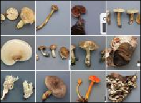
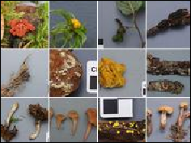
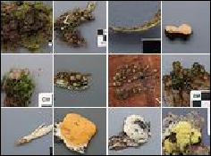

Fungi Images on Flickr
Foray Newfoundland and Labrador Fungi Images Collection on Flickr. Click on any grouping listed to see the various genera containing individual images of the fungi collected at Forays 2003 to 2014.
Phylum: Basidiomycotina
Groups
Gilled mushrooms



Phylum: Ascomycotina
Classes
- Operculate Discomycetes
- Inoperculate Discomycetes
- Pyrenomycetes
- Hemiascomycetes
- Plectomycetes
- Zygomycetes